カメラエフェクト
スタジオ → エフェクトを開きます。見出しを押すと設定項目が開き、右側のスイッチをオンにすると効果が適用されます。
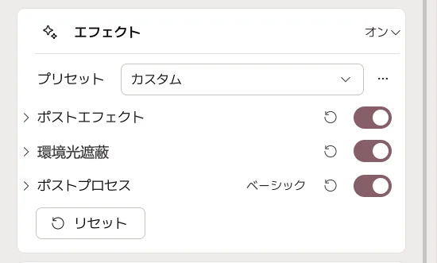
| エフェクトの種類 | 利用可能なエディション |
|---|---|
| ポストプロセッシング | Basic・Pro |
| 追加ポストエフェクト | Pro |
| 環境遮蔽 | Pro |
ブルームと被写界深度は複数の種類にあります。まず片方のグループで一つずつ有効にして比較してください。見出しのリセットはそのグループだけ、下部のリセットは全エフェクトを初期化します。
ポストプロセッシング
基本的な色調・光のにじみ・レンズ表現を調整します。
アンチエイリアシング
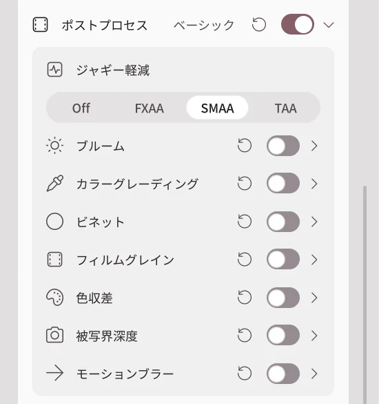
髪や衣装の輪郭に生じるギザギザを滑らかにします。
| 選択 | 見た目の違い |
|---|---|
| Off | 輪郭の補正を無効にします。 |
| FXAA | 軽量ですが、細かな模様が少しぼやける場合があります。 |
| SMAA | 細部を残しながら輪郭を整えます。 |
| TAA | 時間方向に映像を安定させます。動く物体に残像が出る場合があります。 |
ブルーム
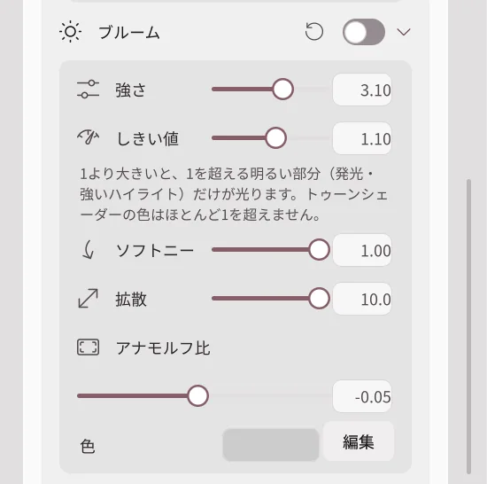
明るい髪・発光する装飾の周囲に光をにじませます。
| 設定 | 値を上げると |
|---|---|
| 強度 | 光のにじみが強くなります。 |
| しきい値 | より明るい部分だけが光ります。下げると普通に明るい面も光ります。 |
| ソフトニー | 光り始める明るさの境界がなだらかになります。 |
| 拡散 | 光がより広い範囲へ広がります。 |
| アナモフィック比率 | 光のにじみを横方向または縦方向に伸ばします。 |
| 色 | にじむ光の色を指定します。 |
色補正
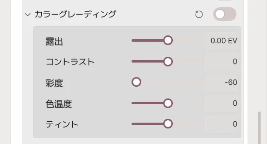
| 設定 | 効果 |
|---|---|
| 露出 | 上げると画面全体が明るくなり、下げると暗くなります。 |
| コントラスト | 明部と暗部の差を強めます。 |
| 彩度 | 色を濃くします。下げると白黒に近づきます。 |
| 色温度 | 下げると寒色寄り、上げると暖色寄りになります。 |
| ティント | 緑色とマゼンタの色かぶりを調整します。 |
ビネット
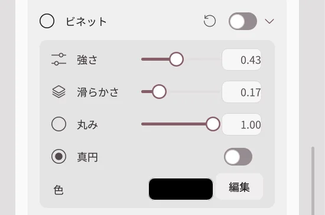
画面の周囲を暗くして、中央に視線を集めます。
- 強度： 上げるほど端が暗くなります。
- 柔らかさ： 上げるほど暗い部分と中央の境界が広くぼけます。
- 丸み： 周囲の暗い部分の形を変えます。
- 色： 端に混ぜる色を指定します。
フィルムグレイン
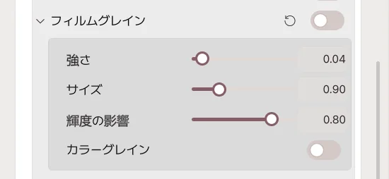
画面にフィルムのような細かな粒子を重ねます。
- 強度： 粒を目立たせます。
- サイズ： 粒を大きくします。
- カラー： 色のついた粒子を使用します。
色収差
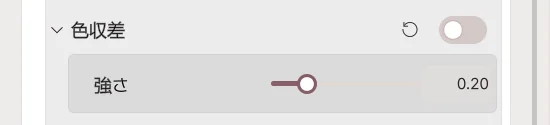
輪郭の端で赤・緑・青をわずかにずらし、レンズのような色ずれを表現します。強度を上げると色の分離が大きくなります。
被写界深度
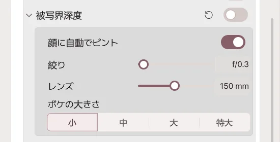
ピントが合った顔を鮮明に保ち、前後をぼかします。
| 設定 | 効果 |
|---|---|
| 顔の自動フォーカス | オンにすると動く顔を追いかけてピントを合わせます。 |
| フォーカス距離 | 自動を切ったとき、鮮明に写す距離を指定します。 |
| 絞り | F 値が小さいほど前後のぼけが強くなります。 |
| レンズ | 焦点距離が長いほど前後がぼけやすくなります。 |
| ぼけの品質 | 高いほど滑らかですが PC/GPU の負荷が増えます。 |
F 値を下げすぎたりフォーカス距離を間違えたりすると、顔もぼけてしまいます。
モーションブラー
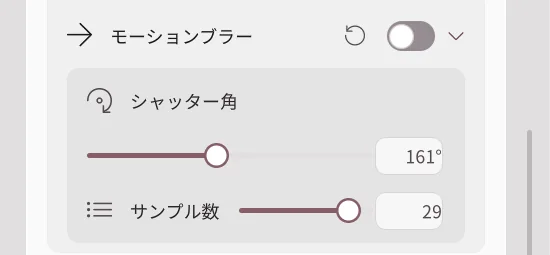
素早い動きに残像を加えます。
- シャッター角： 上げると残像が長くなります。
- サンプル数： 上げると滑らかになりますが PC/GPU 負荷が増えます。
追加ポストエフェクト (Pro)
Beautify を基にした別のカメラエフェクト群で、アプリでは「後処理エフェクト」と表示されます。
色・トーン
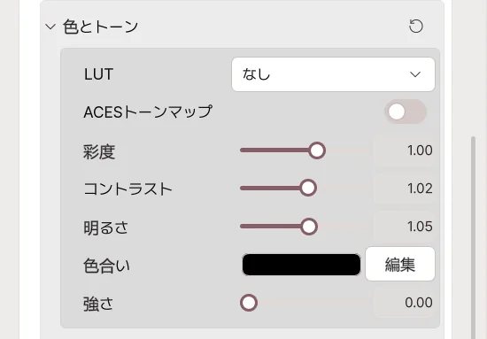
| 設定 | 効果 |
|---|---|
| LUT | プリセットの色調フィルターを選びます。 |
| LUT 強度 | フィルターの色調を強くします。 |
| ACES トーンマップ | 明るい部分と暗い部分の表現を変更します。 |
| 彩度 | 色を濃くします。 |
| コントラスト | 明暗の差を変更します。 |
| 明るさ | 画面全体の明るさを変更します。 |
| 色合い・強度 | 選択した色を画面に混ぜます。強度が 0 なら色を選んでも見えません。 |
シャープ・ディザ
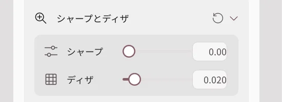
- シャープ： 輪郭をくっきりさせます。0 で無効。上げすぎると輪郭が荒れます。
- ディザ： わずかなノイズで背景グラデーションの色の帯を目立たなくします。
ブルーム
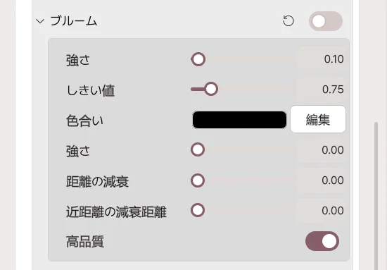
- 強度： 光のにじみの強さです。
- しきい値： 上げると明るい部分だけが光ります。
- 色合い・強度： 光に混ぜる色と割合です。
- 距離減衰： 遠くにある光のにじみを減らします。
- 近距離減衰： カメラに近い部分の光のにじみを減らす距離です。
- 高品質： にじみを滑らかにしますが処理負荷が増えます。
アナモフィックフレア
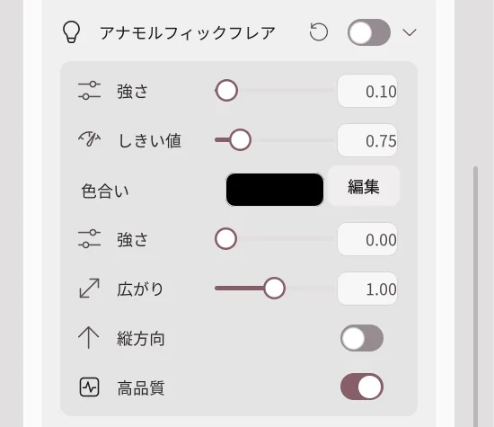
明るいところから長く伸びる光線を作ります。
- 強度： 光線を明るくします。
- しきい値： 高いほど明るい部分だけに発生します。
- 広がり： 光線が長く伸びます。
- 縦方向： オンで縦、オフで横に伸びます。
- 色合い・強度： 光線の色を設定します。
被写界深度
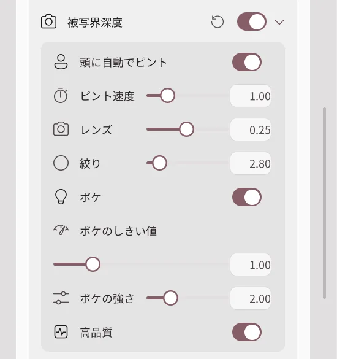
- 頭の自動フォーカス： アバターの頭にピントを追従させます。
- フォーカス距離： 自動を切ったときに鮮明に写す距離です。
- フォーカス速度： 高いほど動く対象にすばやくピントを合わせます。
- レンズ・絞り： ぼける範囲を設定します。
- ボケ： ぼやけた明るい点を光の玉として表現します。
- ボケのしきい値： 高いほど強い光だけが玉になります。
- ボケ強度： 光の玉の明るさを調整します。
後述のブラーをオンにすると、こちらの被写界深度はオフになります。
色収差
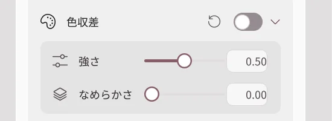
- 強度： 輪郭の色ずれが大きくなります。
- 滑らかさ： 色ずれの変化をなだらかにします。
透明背景ではこの効果はオフになります。
レンズ汚れ
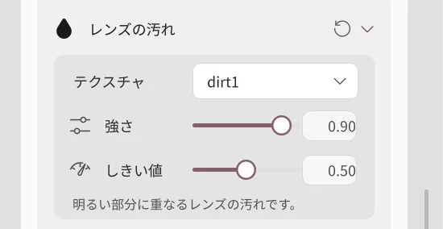
明るい部分にレンズの汚れや染みを重ねる演出です。
- テクスチャ： 汚れ模様を選びます。「なし」で無効です。
- 強度： 汚れを濃く表示します。
- しきい値： 汚れが反応する明るさです。
ビネット
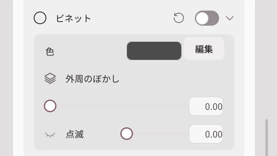
- 色： 画面の縁に使う色です。
- 端のフェード： 端の暗さを調整します。
- まばたき： 目を閉じるように画面を覆う度合いです。
ナイトビジョン
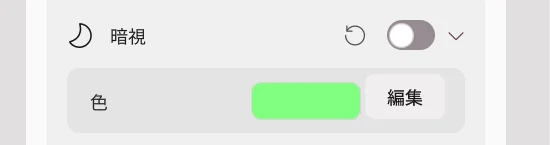
選んだ色で暗視カメラのような画面を作ります。スイッチをオンにし、色を選んでください。
ブラー
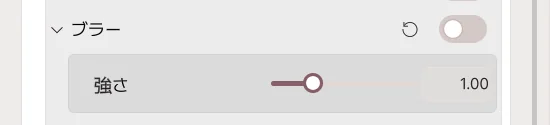
画面全体をぼかします。強度を上げるほど強くぼけます。顔だけ鮮明にしたい場合はブラーではなく被写界深度を使用してください。
ピクセル化
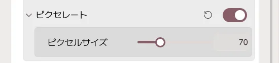
画面を大きな四角いピクセルに変えます。ピクセルサイズを上げるほど粗いモザイクになります。
環境遮蔽 (Pro)
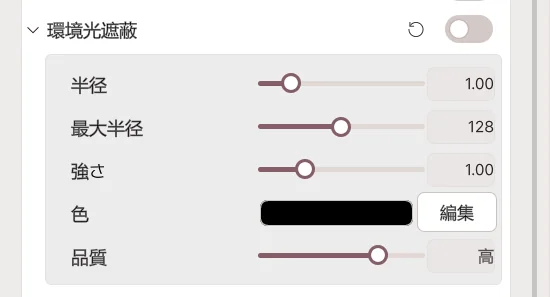
HBAO により、あごの下・衣装のしわ・部屋の隅など、近接する面に陰影を付けます。
| 設定 | 値を上げると |
|---|---|
| 半径 | 影が広がる範囲が大きくなります。 |
| 最大半径 | 影を計算する最大範囲が大きくなります。 |
| 強度 | 影が濃くなります。 |
| 色 | 影の色を変更します。 |
| 品質 | 影が滑らかになりますが PC/GPU 負荷も増えます。 |
目や鼻の周囲が暗くなりすぎた場合は、強度や半径を下げてください。
適用前後を比較
同じアバターと構図で実際のエフェクト値を変更して撮影した例です。


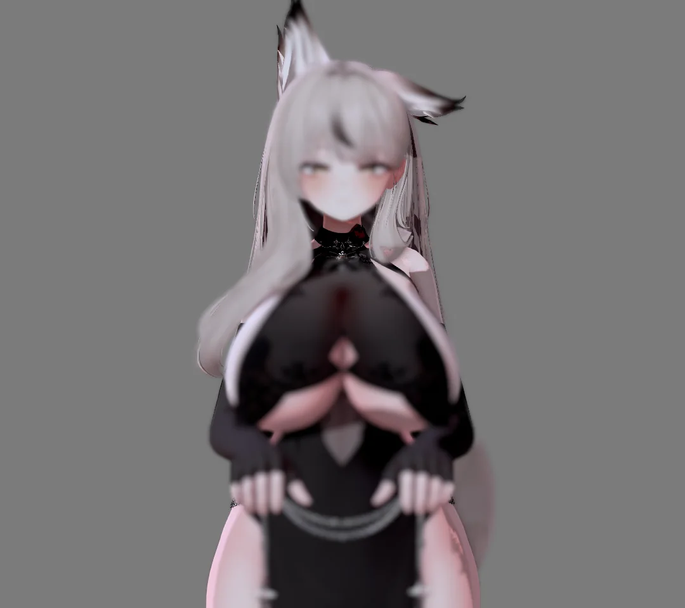
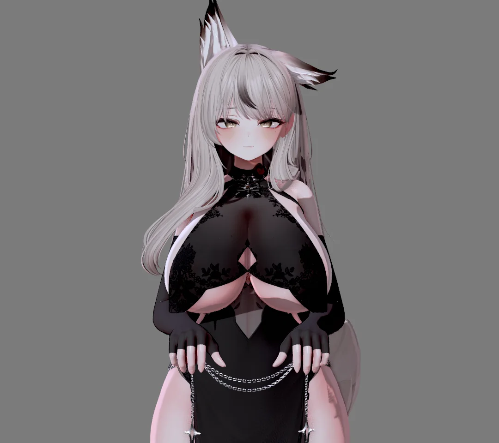